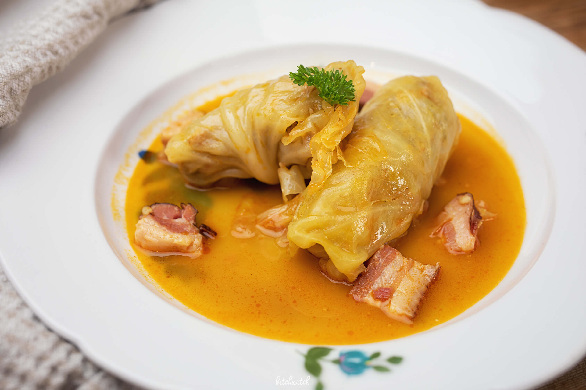

Sarma

Sarma is a traditional dish popular in the Balkans,
Eastern Europe, and Turkey. It’s essentially cabbage rolls stuffed with a
savory filling, often served during holidays or family gatherings. The
name “sarma” comes from the Turkish word for “wrap” or “roll.”.
Ingredients:
- Ground meat
- Rice
- Onion (finely chopped)
- Garlic
-
Spices: salt, black pepper, paprika, sometimes a pinch of cayenne or
allspice
- Herbs: parsley, dill
- Pickled cabbage leaves
- Tomato paste or crushed tomatoes
- Water or broth
- Oil
- Smoked meat or bacon for extra flavor
Steps:
-
Prepare the cabbage: carefully separate the leaves and cut out thick
stems
-
Sauté onions (and garlic) in a bit of oil until soft. Mix sautéed onions
with ground meat, rice, and spices/herbs. This is your filling.
-
Take a cabbage leaf and place a spoonful of filling near the stem. Fold
in the sides and roll tightly, like a burrito. Place some leftover
cabbage leaves on the bottom of a large pot to prevent burning. Arrange
the rolls seam-side down in layers.
-
Cook the sarma. Mix tomato paste with water or broth and pour over the
rolls until mostly covered. Add bay leaves or smoked meat if
desired.Place a plate on top to keep rolls submerged. Simmer gently on
low heat for 1.5–2 hours until meat and rice are cooked and flavors
meld.
-
Sarma is often served hot, sometimes with sour cream on the side. It
also tastes great cold the next day!